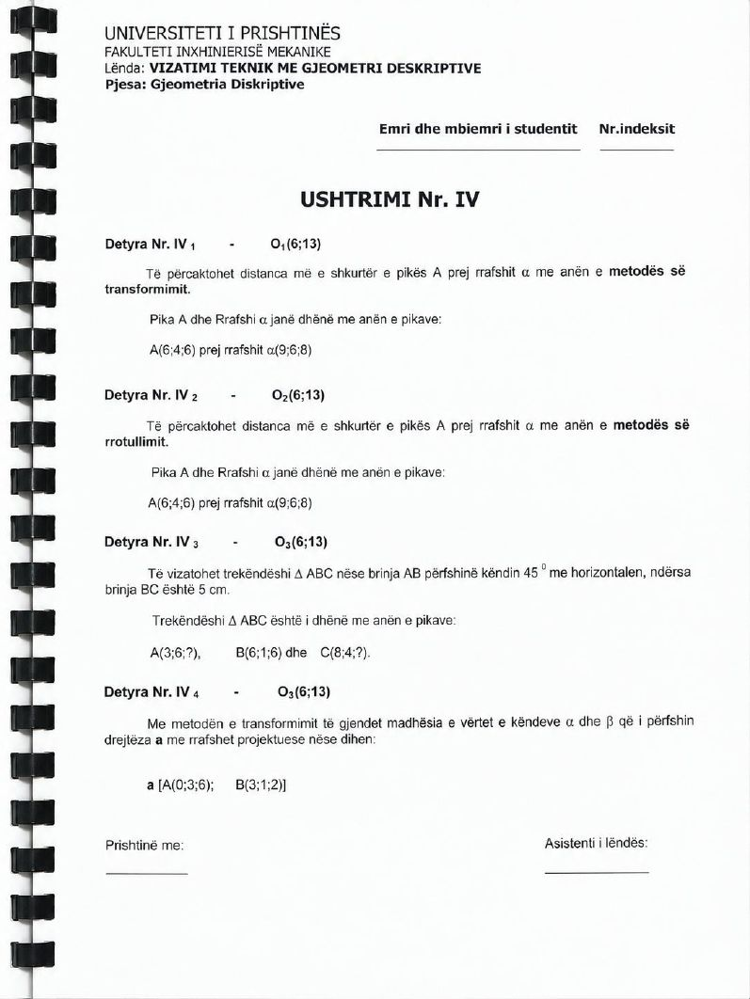

Animacioni
▶
Animacioni për këtë detyrë është në përgatitje.
Ndërkohë shiko zgjidhjen nga libri më poshtë.
Faqet e librit

Trekëndëshi ABC me brinjën AB nën 45° ndaj horizontales
Të vizatohet trekëndëshi ABC nëse brinja AB përfshin këndin 45° me horizontalen, ndërsa brinja BC është 5 cm.
Të dhënat: O₃ (6; 13); A (3; 6; ?), B (6; 1; 6), C (8; 4; ?)
Libri nuk ka faqe zgjidhjeje për këtë detyrë; vetëm teksti i ushtrimit në faqen 14.
Animacioni për këtë detyrë është në përgatitje.
Ndërkohë shiko zgjidhjen nga libri më poshtë.
